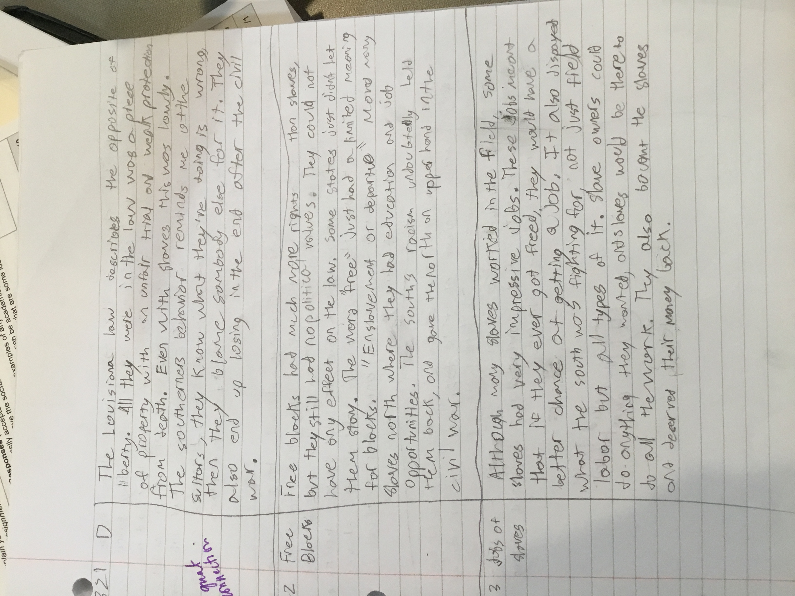

Annotations are a helpful to develop analysis. Each chapter covers a long period of time and I develop many idea on the different topic covered. Also annotations are due at least a week of time apart so I have a long time to thing about the evidence and draw conclusions. It is also split up into different topics so the next time the topic comes up in class I already have analysis on it.
